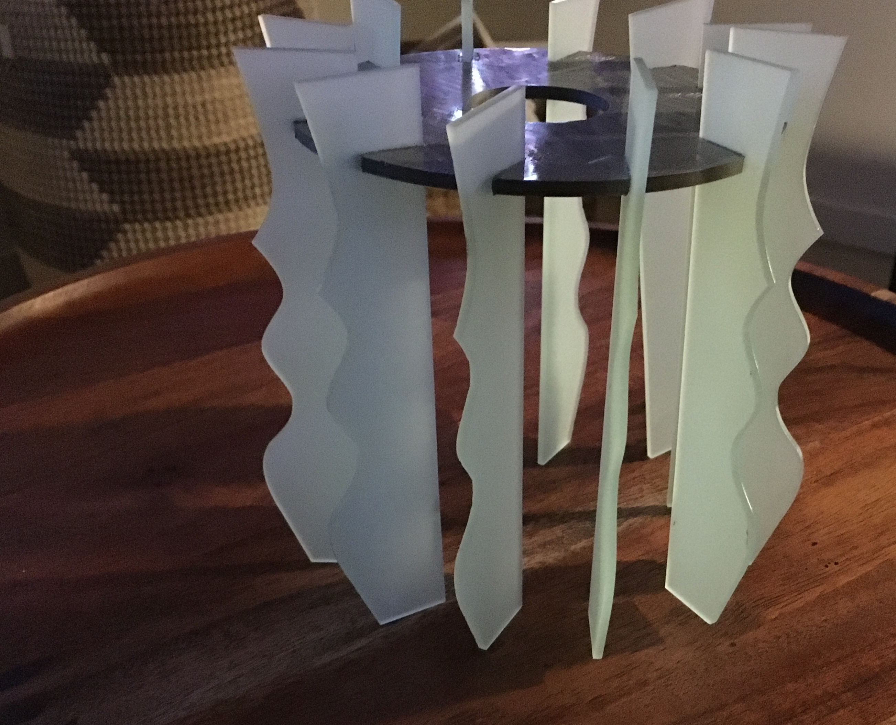

Moving Parts : OnShape
Native AI FileOnShape File
I love gear mechanisms—the above is my inspiration for the direction I took for this project.
However I didn't start here! I spent a few hours looking for moving parts concepts online and
found inspiration in a toy conveyer belt. I abandoned the project because of time and all the pieces
involved, but not before I created the below in OnShape. Building this actually helped me begin to
learn basic Onshape.


Toy conveyer belt inspiration. I sketeched ideas for modernizing the design and sketched-out the parts. I created the roller using the revolve tool.


I began with a open source file for a spur gear and then made changes to the overall size, number of teeth, and extrusion height.
I measured the "pin" using a caliper and created a center hole in the gear 2mm larger than the rod to ensure the base would push through the opening.
Before beginning creating a base I sketched how the gears may relate when attached to a base.
I deliberately wanted to put the circles on square base because I liked juxtaposing the two simple shapes.
The sketch gave me the dimensions I needed for the base.
The tricky part was identifying exactly where the holes for attaching the 3 gears would be positioned on the base, so that the gears
would engage and move together. I learned that the _______dimension on a gear sketch specifies the point of contact between two gears.
By using this dimension I created a the relationship between the gears and was able to be exacting and confident about where to place
3 holes for the gears.

The pieces dropped out with no effort,perfectly.
Now the scary part : Will the acrylic and filament components fit together???

With putting on some pressure and wiggling they did : YAY. NO WAY this will come apart! I also inserted the lighting element
which fit as intended.

Assembled before adding lighting component.
Assembled and lit-up
SHOUT OUT THANK YOU to colleague Andrew and the rest of the Monday afternoon crew who shared
as they learned which printers were unreliable and other tips.